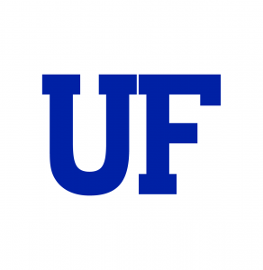
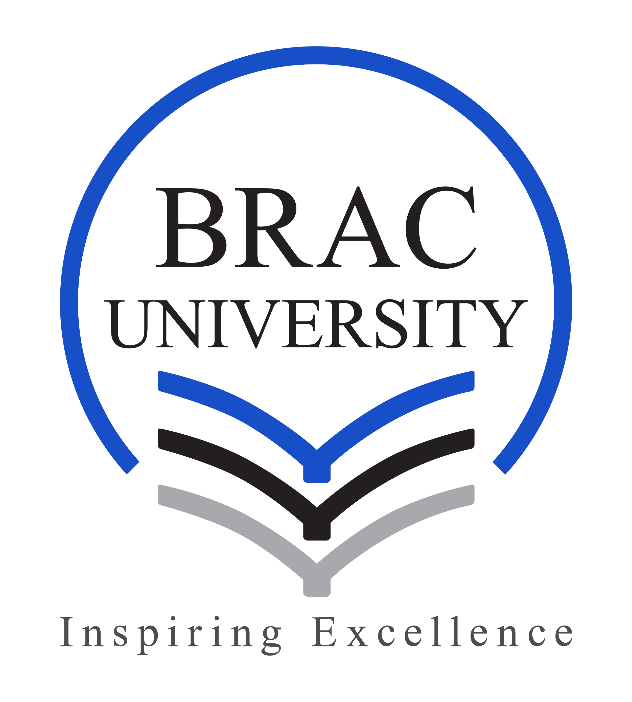

About Me
I am a Ph.D. researcher working in robotics and autonomous systems in the Department of Electrical and Computer Engineering at the University of Florida. My research focuses on building robust perception, navigation, and human-robot interaction systems for challenging underwater environments characterized by GPS denial, low visibility, and degraded sensing. I work at the intersection of robot vision, multi-modal scene representation, and SLAM, developing real-time ROS-based pipelines that are validated through extensive field deployments on AUV and ROV platforms.
My current research spans three main directions: (i) AI-driven perception and sonar-visual scene representation for natural language interaction with AUVs, (ii) advanced subsea telerobotics and shared autonomy interfaces that enable effective human-robot collaboration, and (iii) sensing, security, and agentic surveillance for underwater data center operations. I am a Graduate Research Assistant at the RoboPI Lab, where I lead projects on audio-visual signal understanding, adaptive autonomy, and resilient robotic systems for long-duration missions.


Education
Doctor of Philosophy (PhD)

January 2023 - Present
Department of Electrical and Computer Engineering (ECE)
University of Florida (UF)
Bachelor of Science in Engineering (BScEngg)

February 2016 - February 2021
Department of Electrical and Electronic Engineering (EEE)
Bangladesh University of Engineering and Technology (BUET)
CGPA: 3.73 / 4.00 # Rank: 33 / 216 # Top 15% in graduating class
Higher Secondary Certificate (HSC)
Class of 2015
Notre Dame College, Dhaka
Group: Science
GPA: 5.00 / 5.00 # Rank: 70 / 1504 # Top 5% in college
Experience Highlight
Research & Collaborations
My research centers on field robotics and AI-embedded robust sensing for autonomous systems operating in challenging environments, including GPS-denied, low-light, and confined underwater settings. I take an end-to-end systems approach: designing and integrating hardware platforms, developing perception and autonomous control algorithms, and validating them through real-world deployments. My current projects span multimodal scene representation for natural-language interaction with AUVs, agentic underwater infrastructure surveillance against acoustic threats, and the development of embodied human-robot teleoperation interfaces for shared autonomy missions.
A defining aspect of my work is extensive field validation and cross-institutional collaboration.
- I have led underwater cave exploration trials in Florida in collaboration with the Autonomous Field Robotics Lab at the University of Delaware, executing tens of human-robot cooperative missions.
- I have prototyped and deployed low-cost, portable marine robotic modules for water-quality monitoring with the VTech Center for Ecosystem Forecasting.
- I have conducted seabed and subsea structure mapping missions in the Gulf of Mexico with the FSU Coastal and Marine Lab using NemoSens AUV.
- I have contributed to live glider trajectory estimation experiments using streamed data from the Atlantic Ocean during the Autonomous Systems Bootcamp at the University of Delaware.
Collectively, these efforts emphasize scalable, field-proven robotic systems that bridge perception, autonomy, and human interaction.
See projects led by me: Research
Graduate Research Assistant

RoboPI Lab, Department of ECE, University of Florida
January 2023 - Present
Teaching Experience
Graduate Teaching Assistant
Department of ECE, University of Florida
January 2024 - April 2024
Adjunct Lecturer

Department of CSE, Brac University
February 2022 - December 2022
Full-Time Lecturer

Department of EEE, Bangladesh University of Business and Technology
January 2022 - February 2022
Full-Time Lecturer

Department of EEE, Z. H. Sikder University of Science and Technology
June 2021 - January 2022